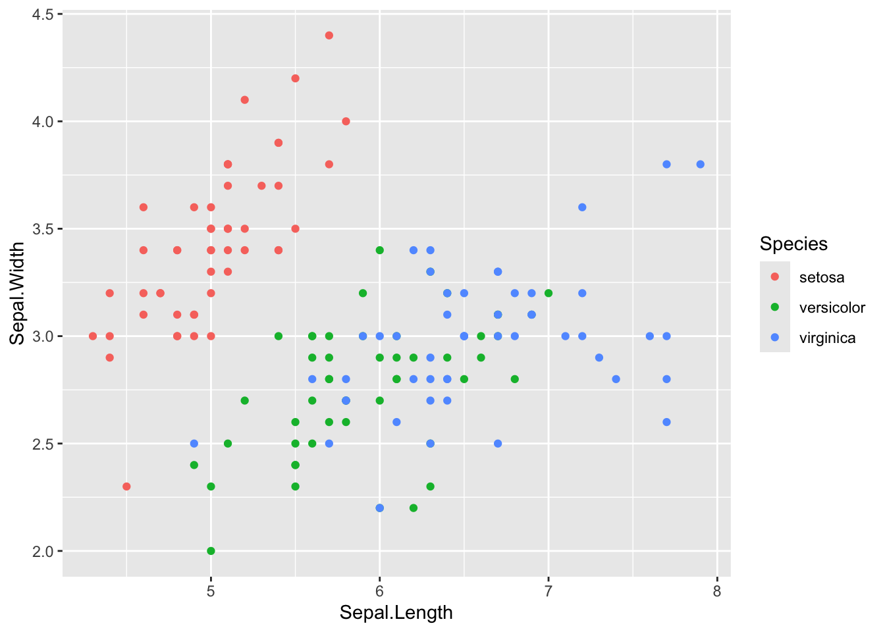

2+2
exp(10)
a = log(2)
a
b =cos(10)
b
a - b
a*b
d <- 2 < 3
d
dd <- FALSE
dd - d
dd + d
e<- "toto"
class(e)
str(e)TP 1 : Introduction au langage R
ModIA - 4ème année - 2025-2026
Objectif
Les objectifs de cette séance sont
- une première prise en main du logiciel R avec la présentation de commandes de base
- se familiariser avec RStudio
- débuter dans la rédaction de documents en quarto ou Rmarkdown
Ce TP s’appuie sur des parties du tutoriel R disponible sur https://cmaugis.github.io/TutorielR-V2025/.
1 Introduction
1.1 Pourquoi R ?
Le logiciel R sous licence GNU est facile à installer à partir de la page du CRAN (ou d’un site miroir). Le CRAN contient toutes les ressources nécessaires à l’utilisateur de R, débutant ou expérimenté : fichiers d’installation, mises à jour, librairies, FAQ, newsletter, documentation… R est un logiciel très utilisé dans la communauté statistique.
Dans sa structure, R est un langage de programmation d’une syntaxe voisine à celle du langage C et capable de manipuler des objets complexes sous forme de matrice, scalaire, vecteur, liste, facteur et aussi data frame. Il dispose également d’une très riche librairie de quasiment toutes les procédures et méthodes statistiques de la littérature.
1.2 Présentation de Rstudio
Nous allons utiliser RStudio durant les TP d’Analyse de Données et d’Elements de modélisation statistique. RStudio n’est pas qu’une interface graphique pour R, il s’agit d’un environnement de développement intégré, proposant des outils et facilite l’écriture de scripts et l’utilisation de R. La version gratuite de RStudio étant déjà très riche en fonctionnalités, elle est suffisante pour les enseignements. Elle est disponible pour Linux, Windows et MacOS.
Après avoir installé une version récente du logiciel R (voir CRAN), installez la version gratuite de Rstudio adaptée à votre OS.
1.2.1 Description des fenêtres de RStudio
A chaque ouverture de RStudio, l’écran est découpé en quatre grandes zones :
En bas à gauche c’est la Console, on peut y lire au lancement la version de R que RStudio a chargé. Après le texte d’entrée, la ligne commence par
>qui est l’invite de commande. RStudio est prêt à recevoir votre première commande. On peut se servir de R comme d’une calculatrice. Vous pouvez par exemple taper> 2+3et taperEntrée. Le résultat apparait alors dans la console.En haut à droite, on peut voir dans Environnement la liste des objets et fonctions créés au fur et à mesure du travail. On a également accès à l’historique des commandes dans History.
En bas à droite, on trouve plusieurs onglets :
- Files : permet de voir le contenu du répertoire de travail
- Plots : permet de visualiser les graphiques créés
- Packages : liste les packages installés pour les charger, mettre à jour, en installer d’autres
- Help : permet d’accéder à l’aide en ligne
En haut à gauche, c’est la zone d’Edition pour gérer les scripts, les executer, ….
Lorsque vous quittez RStudio, on vous demande si vous souhaitez sauvegarder l’environnement de travail. Si vous y répondez favorablement, un fichier de sauvegarde .RData est enregistré dans le répertoire courant.
1.2.2 Types de documents avec RStudio
En allant dans File -> New File ou en cliquant sur la flèche à côté de l’icone de New File (en haut à gauche), RStudio propose de nombreux types de document. Vous pouvez noter que l’on peut utiliser RStudio également pour faire du python, du C++, … Nous allons ici ne parler que de quelques types de fichiers que l’on utilisera par la suite.
Pour créer un script R, il suffit de sélectionner R Script. Ce script peut être enregistré à tout moment dans un fichier avec l’extension ” .R” (ex. monScript.R) dans le répertoire courant en cliquant sur l’icône de disquette ou par File->Save. Vous pouvez l’ouvrir à tout moment grâce au menu File –> Open file..., à l’icône dossier ou en double cliquant sur le fichier monScript.R. Il est également possible d’executer un script directement depuis la console grâce à la commande source("monScript.R").
On peut également créer des documents de type rapport, slides, … contenant du texte, du code, des images, des formules mathématiques en latex, ….
- à l’aide de
RMarkdownen sélectionnantR markdown .... Le document créé sera sauvegardé avec l’extension ” .Rmd”.
Pour plus de détails, voir ici.
- à l’aide de
quartoen sélectionnantQuarto Document ...ouQuarto Presentation ...pour la création de présentation, rapports, … La syntaxe est assez proche de celle de Rmarkdown. Dans la suite du cours, on travaillera avec des fichiers quarto.
Pour plus de détails, voir ici.
1.3 Environnement
1.3.1 Répertoire de travail
Pour pouvoir récupérer des données, maîtriser la sauvegarde des scripts, des résultats, … il est important de connaitre le répertoire de travail c’est-à-dire le répertoire sous lequel les divers résultats seront sauvegardés par défaut. Ce dernier s’obtient à l’aide de la commande > getwd().
Pour changer de répertoire de travail, on peut
- utiliser la commande
setwd()dans la Console. A noter que R ne reconnaît que le caractère “/” pour spécifier le chemin d’accès d’un répertoire (même sous Windows). - passer par
Session -> Set Working Directory -> Choose Directory.
Exercice :
Créez un dossier de travail pour ce TP dans votre home (en dehors de RStudio!) Placez dans ce dossier le fichier TP1-InitR.qmd disponible sur moodle. Dans RStudio, placez-vous dans ce dossier de travail pour le TP. Ouvrez le fichier TP1-InitR.qmd. Vous êtes maintenant prêt à poursuivre ce TP.
1.3.2 Les librairies pour R
R est un logiciel libre, il s’enrichit grâce au développement de librairies par la communauté. La plupart des extensions sont développées et maintenues par la communauté des utilisateurs de R, et diffusées via le CRAN (Comprehensive R Archive Network). On peut également trouver des packages déposés sur github par exemple.
Pour installer une librairie disponible sur le CRAN, vous avez plusieurs manières de le faire, dont
- passer par le menu
Tools-> Install Packages ..., sélectionner un site miroir du CRAN et demander la librairie souhaitée - aller dans l’onglet Packages dans la fenêtre en bas à droite et cliquer sur Install.
- utiliser la fonction
install.packages()directement dans la console en précisant la librairie souhaitée
Toutes les librairies ne sont pas chargées automatiquement au lancement de R. Pour charger une librairie, on utilise la commande library().
Exercice :
- Installez la librairie corrplot
- Chargez la librairie corrplot
1.3.3 L’aide de R
On peut à tout moment faire appel à l’aide intégrée de R (et surtout avant d’appeler l’enseignant-e !) pour avoir les détails comme les arguments d’une fonction. On peut accéder à l’aide pour une fonction (ex pour la fonction plot) en passant le nom de la fonction dans help() (ex > help(plot)) ou en utilisant le raccourci > ?plot. Ces deux commandes permettent d’afficher une page de description (en anglais) de la fonction, ses paramètres, son résultat, d’exemples, … Dans RStudio, les pages d’aide en ligne s’ouvriront par défaut dans la zone en bas à droite, sous l’onglet Help. Un clic sur l’icône en forme de maison vous affichera la page d’accueil de l’aide. Vous pouvez aussi taper directement le nom de la fonction recherchée dans la zone de recherche dans l’onglet Help.
Exercice :
Accédez à l’aide de la fonction
rnorm
2 Structure des objets
Sous R, les éléments de base sont des objets : des données (vecteurs, matrices, …), des fonctions, des graphiques, … Ces objets se différencient par leur mode décrivant leur contenu, et leur classe décrivant leur structure. Les objets atomiques sont de mode homogène et les objets récursifs sont de mode hétérogène. Les différents modes sont null (objet vide), logical, numeric, complex, character.
Les classes d’objets les plus courantes sont : vector, matrix, array, factor, data.frame, list. On peut avoir des vecteurs, matrices, tableaux, … de mode null (objet vide), logical (TRUE, FALSE, NA), numeric, complex, character. Par contre les listes et les tableaux peuvent être composés d’éléments hétérogènes. On utilise la commande class() pour connaître la classe d’un objet et str()pour connaitre la nature des éléments composant l’objet.
La principale difficulté en R réside dans l’identification des types d’objets manipulés. Nous allons dans ce TP présenter différents objets, les opérations et manipulations basiques que l’on peut faire, …
On peut stocker un objet dans une variable (ex a) à l’aide de a<- ... ou a= .... Pour lister les variables actuellement disponibles dans la session de travail, on utilise la fonction ls(). Pour effacer une ou plusieurs variables, on utilise la fonction rm(). La commande rm(list=ls()) permet d’effacer toutes les variables en mémoire.
2.1 Opération sur les scalaires
Les opérations élémentaires sur les scalaires sont *,-, +, /, ^.
Executez les commandes suivantes. Vous chercherez en particulier à bien identifier les différents types de données :
Pour tester si un objet obj est de type xxx, on utilise la commande is.xxx(obj). On peut aussi contraindre si possible l’objet obj au type xxx avec la commande as.xxx(obj).
a = 4.3
is.numeric(a)[1] TRUEis.complex(a)[1] FALSEis.character(a)[1] FALSEas.character(a)[1] "4.3"b<- "toto"
is.numeric(b)[1] FALSEas.list(b)[[1]]
[1] "toto"Pour obtenir des valeurs arrondies sur des valeurs numériques, vous pouvez utiliser l’une des commandes suivantes round(), ceiling(), floor(), trunc() ou signif() (voir l’aide ?round). Comparez les codes suivantes:
a=1.3579
floor(a)[1] 1ceiling(a)[1] 2round(a,digits=2)[1] 1.36signif(a,digits=2)[1] 1.4is.integer(floor(a))[1] FALSEis.numeric(floor(a))[1] TRUE2.2 Booléens et opérations logiques
En R, un booléen est représenté par TRUE ou FALSE. Les opérations logiques, <, >, <=, >=, != (différent), == (égal) retournent TRUE ou FALSE. On peut définir plusieurs conditions à remplir avec les opérateurs & (ET) et | (OU).
Attention, R considère qu’un booléen a FALSE vaut \(0\) et qu’un booléen a TRUE vaut \(1\). Il est donc capable d’évaluer TRUE + 5 bien qu’en toute logique, cela n’a aucun sens!
Voici quelques exemples de manipulation des booléens :
a <- 3
b <- 6
a<=b[1] TRUEa!=b[1] TRUE(b-3==a) & (b>=a)[1] TRUE(b==a) | (b>=a)[1] TRUE2.3 Les caractères
On donne ici quelques fonctions de base sur la manipulation des chaînes de caractères. Dans le tutoriel, on présente le package stringr qui est très utilisé pour gérer et manipuler des chaînes de caractères (voir ici).
Pour concaténer, juxtaposer des chaînes de caractères on utilise la fonction paste()
Ex <- paste("Bonjour", "à","toutes","et","tous","!")
paste("Bonjour", "à","toutes","et","tous","!",sep="_")[1] "Bonjour_à_toutes_et_tous_!"x <- c("Bonjour", "à", "vous")
paste(x)[1] "Bonjour" "à" "vous" On accède à la longueur d’une chaîne avec la fonction nchar()
Ex[1] "Bonjour à toutes et tous !"nchar(Ex)[1] 26La fonction substr() permet d’extraire une partie d’une chaîne à partir des attributs « start » et « stop ». On peut aussi remplacer des segments d’une chaine.
Ex[1] "Bonjour à toutes et tous !"substr(Ex,start=3,stop=9)[1] "njour à"substr(Ex, start = 3, stop = 9) <- "@@@"
Ex[1] "Bo@@@ur à toutes et tous !"On peut aussi utiliser la fonction substring()
Ex <- paste("Bonjour", "à","toutes","et","tous","!")
substring(Ex, first = 3)[1] "njour à toutes et tous !"substring(Ex, first = 3, last = 9) <- "@@@--<"
Ex[1] "Bo@@@--<à toutes et tous !"La fonction strsplit() permet de scinder une chaîne de caractères :
Ex <- paste("Bonjour", "à","toutes","et","tous","!")
strsplit(Ex,split= " ")[[1]]
[1] "Bonjour" "à" "toutes" "et" "tous" "!" strsplit(Ex,split=c("o"," "))[[1]]
[1] "B" "nj" "ur à t" "utes et t" "us !" La sortie de la fonction strsplit() est une liste (voir section sur list)
La fonction grep() permet de rechercher les éléments d’une liste.
Ex1 <- c("tomate","concombre","mais","courgette","poivron","carotte","betterave")
Ex1[1] "tomate" "concombre" "mais" "courgette" "poivron" "carotte"
[7] "betterave"# Donne les indices des éléments contenant un "o" dans Ex
grep(pattern="o",Ex1,value=FALSE) [1] 1 2 4 5 6# Donne les éléments de Ex1 qui contiennent la lettre "o"
grep(pattern="o",Ex1, value = TRUE) [1] "tomate" "concombre" "courgette" "poivron" "carotte" Pour remplacer un pattern dans une chaine de caractère, on peut utiliser la fonction gsub().
Ex1[1] "tomate" "concombre" "mais" "courgette" "poivron" "carotte"
[7] "betterave"gsub(pattern = "o" , replacement = "@" , Ex1, fixed = TRUE)[1] "t@mate" "c@nc@mbre" "mais" "c@urgette" "p@ivr@n" "car@tte"
[7] "betterave"2.4 Vecteurs (vector)
Un vecteur est un ensemble ordonné d’éléments de même nature (numérique, logique ou alphanumérique). La création d’un vecteur peut se faire par la commande c(e1,e2,...). On peut également générer une séquence avec la commande seq(a,b,t) où \(a\) est le premier terme, le dernier terme est \(\leq b\) et le pas est \(t\). Pour créer un vecteur constitué de l’élément \(x\) répété \(n\) fois, on utilise la commande rep(x,n).
2.4.1 Exemples
On donne ici quelques exemples à tester sous R pour vous familiariser avec les vecteurs. En particulier, vous pouvez découvrir des fonctions utiles avec les vecteurs comme length(), sum(), sort(), … , les opérations usuelles, l’extraction d’éléments d’un vecteur, …
d <- c(2,3,5,8,4,6)
d[1] 2 3 5 8 4 6is.vector(d)[1] TRUEc(2,5,"toto")[1] "2" "5" "toto"1:10 [1] 1 2 3 4 5 6 7 8 9 10seq(1,10) [1] 1 2 3 4 5 6 7 8 9 10seq(from=1,to=20,by=2) [1] 1 3 5 7 9 11 13 15 17 19seq(1,20,by=5)[1] 1 6 11 16seq(1,20,length=5)[1] 1.00 5.75 10.50 15.25 20.00rep(5,times=10) [1] 5 5 5 5 5 5 5 5 5 5rep(c(1,2),3)[1] 1 2 1 2 1 2rep(c(1,2),each=3)[1] 1 1 1 2 2 2d[1] 2 3 5 8 4 6d[2][1] 3d[2:3][1] 3 5d[c(1,3,6)][1] 2 5 6d[-3][1] 2 3 8 4 6d[-(1:2)][1] 5 8 4 6Additionner ou soustraire un scalaire d’un vecteur
d+4[1] 6 7 9 12 8 10d-4[1] -2 -1 1 4 0 2Multiplier ou diviser un vecteur par un scalaire
2*d[1] 4 6 10 16 8 12d/3[1] 0.6666667 1.0000000 1.6666667 2.6666667 1.3333333 2.0000000Multiplier/ diviser deux vecteurs terme à terme
e<- rep(2,6)
d*e[1] 4 6 10 16 8 12d/e[1] 1.0 1.5 2.5 4.0 2.0 3.0d <- c(2,3,5,8,4,6)
d[1] 2 3 5 8 4 6Longueur d’un vecteur
length(d)[1] 6Somme des termes d’un vecteur numérique
sum(d)[1] 28Somme des termes cumulés d’un vecteur numérique
cumsum(d)[1] 2 5 10 18 22 28Différence des termes successifs d’un vecteur numérique
diff(d)[1] 1 2 3 -4 2Vérifier si d est un vecteur
is.vector(d)[1] TRUETransposition d’un vecteur
t(d) [,1] [,2] [,3] [,4] [,5] [,6]
[1,] 2 3 5 8 4 6Produit scalaire
t(d)%*%e [,1]
[1,] 56NA (Not Available) signale une donnée manquante
d[3] <- NA
d[1] 2 3 NA 8 4 6is.na(d)[1] FALSE FALSE TRUE FALSE FALSE FALSEany(is.na(d))[1] TRUEall(is.na(d))[1] FALSEAutres fonctions interrsantes avec les vecteurs : abs(), sort(), order(), which(), …
a<-c(3,-1,5,2,-7,3,9)
abs(a)[1] 3 1 5 2 7 3 9sort(a)[1] -7 -1 2 3 3 5 9order(a)[1] 5 2 4 1 6 3 7b = a==3
b[1] TRUE FALSE FALSE FALSE FALSE TRUE FALSEsort(b)[1] FALSE FALSE FALSE FALSE FALSE TRUE TRUEtext<-c("petit","moyen","grand")
is.vector(text)[1] TRUEf = c(a=12,b=26,c=32,d=41)
f a b c d
12 26 32 41 names(f)[1] "a" "b" "c" "d"f["a"] a
12 names(f)<-c("a1","a2","a3","a4")
fa1 a2 a3 a4
12 26 32 41 Notez la différence entre les commandes suivantes :
f>30 a1 a2 a3 a4
FALSE FALSE TRUE TRUE f[f>30]a3 a4
32 41 which(f>30)a3 a4
3 4 f[2] <- 22
f+100 a1 a2 a3 a4
112 122 132 141 Etonnant ces commandes suivantes, non ?
fa1 a2 a3 a4
12 22 32 41 d[1] 2 3 NA 8 4 6f+dWarning in f + d: longer object length is not a multiple of shorter object
length[1] 14 25 NA 49 16 28On peut appliquer une fonction à tous les éléments d’un vecteur facilement.
cos(f) a1 a2 a3 a4
0.8438540 -0.9999608 0.8342234 -0.9873393 2.4.2 Exercice
Question 1 : Créer les vecteurs suivants :
- le vecteur \(a\) constitué des entiers pairs jusqu’à 30
- le vecteur \(b\) contenant \(v=5\), deux fois la valeur de \(v\), puis un tiers de la valeur de \(v\), puis trois fois \(v^2\), puis \(\sqrt{v}\), puis le quatrième élément de \(a\).
- le vecteur \(c\) contenant 6 chiffres compris entre 4 et 30 avec un écart constant entre éléments successifs.
- le vecteur \(d\) contenant la somme des éléments de \(c\), puis la longueur de \(b\), puis 5 fois le chiffre 3.
Question 2 : Extraire du vecteur \(a\) :
- le quatrième élément
- tous les éléments sauf le quatrième
- tous les éléments supérieurs à 10
Question 3 : À quoi sert la fonction unique ? Illustrer son fonctionnement sur un exemple.
# A COMPLETER POUR REPONDRE A L'EXERCICE
# AIDEZ-VOUS DE LA CORRECTION DISPO SUR LE TUTORIEL SI VOUS ETES BLOQUE2.5 Matrices (matrix)
Comme les vecteurs, les matrices sont de mode quelconque mais ne contiennent que des éléments de même nature. Pour créer une matrice, on utilise la commande matrix(vec,nrow=n,ncol=p) où vec est le vecteur contenant les éléments de la matrice de taille \(n\) par \(p\), qui seront rangés en colonne sauf si l’option byrow=T est utilisée.
2.5.1 Exemples
On donne ici quelques exemples à tester sous R pour vous familiariser avec les matrices. En particulier, vous pouvez découvrir des fonctions utiles avec les matrices comme dim(), t(), cbind(), rbind()… , les opérations usuelles dont la différence entre A*B et A%*%B, l’extraction d’éléments d’une matrice, …
A = matrix(1:15,ncol=5)
A [,1] [,2] [,3] [,4] [,5]
[1,] 1 4 7 10 13
[2,] 2 5 8 11 14
[3,] 3 6 9 12 15class(A)[1] "matrix" "array" B = matrix(1:15,nc=5,byrow=T)
B2 = B
B2[1,1]="toto"
B2 [,1] [,2] [,3] [,4] [,5]
[1,] "toto" "2" "3" "4" "5"
[2,] "6" "7" "8" "9" "10"
[3,] "11" "12" "13" "14" "15"rownames(A)=c(paste("ligne",1:3,sep=""))
A [,1] [,2] [,3] [,4] [,5]
ligne1 1 4 7 10 13
ligne2 2 5 8 11 14
ligne3 3 6 9 12 15A [,1] [,2] [,3] [,4] [,5]
ligne1 1 4 7 10 13
ligne2 2 5 8 11 14
ligne3 3 6 9 12 15A[1,3]ligne1
7 A[,2]ligne1 ligne2 ligne3
4 5 6 A[2,][1] 2 5 8 11 14A[1:3,c(2,5)] [,1] [,2]
ligne1 4 13
ligne2 5 14
ligne3 6 15A[1:3,-c(2,5)] [,1] [,2] [,3]
ligne1 1 7 10
ligne2 2 8 11
ligne3 3 9 12Pour concaténer deux matrices, on peut utiliser les fonctions rbind() ou cbind().
A [,1] [,2] [,3] [,4] [,5]
ligne1 1 4 7 10 13
ligne2 2 5 8 11 14
ligne3 3 6 9 12 15B [,1] [,2] [,3] [,4] [,5]
[1,] 1 2 3 4 5
[2,] 6 7 8 9 10
[3,] 11 12 13 14 15cbind(A,B) [,1] [,2] [,3] [,4] [,5] [,6] [,7] [,8] [,9] [,10]
ligne1 1 4 7 10 13 1 2 3 4 5
ligne2 2 5 8 11 14 6 7 8 9 10
ligne3 3 6 9 12 15 11 12 13 14 15rbind(A,B) [,1] [,2] [,3] [,4] [,5]
ligne1 1 4 7 10 13
ligne2 2 5 8 11 14
ligne3 3 6 9 12 15
1 2 3 4 5
6 7 8 9 10
11 12 13 14 15Dimension d’une matrice
dim(A)[1] 3 5Nombre de lignes et de colonnes
nrow(A)[1] 3ncol(A)[1] 5Transposée et déterminant d’une matrice
t(A) ligne1 ligne2 ligne3
[1,] 1 2 3
[2,] 4 5 6
[3,] 7 8 9
[4,] 10 11 12
[5,] 13 14 15det(A[,3:5])[1] 0Inversion d’une matrice
solve(A[1:2,2:3]) ligne1 ligne2
[1,] -2.666667 2.333333
[2,] 1.666667 -1.333333Matrice diagonale et diagonale d’une matrice
diag(A)[1] 1 5 9diag(1:5) [,1] [,2] [,3] [,4] [,5]
[1,] 1 0 0 0 0
[2,] 0 2 0 0 0
[3,] 0 0 3 0 0
[4,] 0 0 0 4 0
[5,] 0 0 0 0 5Matrice de booléens
A>5 [,1] [,2] [,3] [,4] [,5]
ligne1 FALSE FALSE TRUE TRUE TRUE
ligne2 FALSE FALSE TRUE TRUE TRUE
ligne3 FALSE TRUE TRUE TRUE TRUEA[A<5]<-0
A [,1] [,2] [,3] [,4] [,5]
ligne1 0 0 7 10 13
ligne2 0 5 8 11 14
ligne3 0 6 9 12 15Quelques autres fonctions sur les matrices
colSums(A)[1] 0 11 24 33 42apply(A,2,sum)[1] 0 11 24 33 42rowSums(A)ligne1 ligne2 ligne3
30 38 42 apply(A,1,sum)ligne1 ligne2 ligne3
30 38 42 rowMeans(A)ligne1 ligne2 ligne3
6.0 7.6 8.4 apply(A,1,mean)ligne1 ligne2 ligne3
6.0 7.6 8.4 apply(A,1,max)ligne1 ligne2 ligne3
13 14 15 Remarque : on reverra dans la section Programmation la fonction apply() qui permet en particulier d’éviter les boucles for.
Attention à la multiplication matricielle %*% et la multiplication terme à terme *!
Opérations terme à terme de 2 matrices
A+B [,1] [,2] [,3] [,4] [,5]
ligne1 1 2 10 14 18
ligne2 6 12 16 20 24
ligne3 11 18 22 26 30A*B [,1] [,2] [,3] [,4] [,5]
ligne1 0 0 21 40 65
ligne2 0 35 64 99 140
ligne3 0 72 117 168 225Multiplication de matrices
t(B) %*%A [,1] [,2] [,3] [,4] [,5]
[1,] 0 96 154 208 262
[2,] 0 107 178 241 304
[3,] 0 118 202 274 346
[4,] 0 129 226 307 388
[5,] 0 140 250 340 430Multiplication par un scalaire
5*A [,1] [,2] [,3] [,4] [,5]
ligne1 0 0 35 50 65
ligne2 0 25 40 55 70
ligne3 0 30 45 60 752.5.2 Exercice
Créer la matrice \(A=\left(\begin{array}{c c c } 3 & 3 & 3\\ 4 & 4 & 4\\ 5 & 5 & 5\end{array}\right).\)
Ajouter 2 à tous les éléments de \(A\).
Créer la matrice \(B\) en ajoutant la ligne \((1,2,3)\) à \(A\), puis la colonne \((1,1,1,1)'\). Déterminer la dimension de \(B\).
Extraire de \(B\) la sous-matrice \(C\) composée des deux premières colonnes et des deux dernières lignes. Calculer sa transposée et son déterminant. Inverser cette sous-matrice \(C\).
# A COMPLETER POUR REPONDRE A L'EXERCICE
# AIDEZ VOUS DE LA CORRECTION DISPO SUR LE TUTORIEL SI VOUS ETES BLOQUE2.6 Listes (list)
Une liste est une collection ordonnée d’objets qui peuvent être de nature différente. Les listes sont en particulier utilisées par certaines fonctions (cf section Programmation) pour renvoyer des résultats complexes sous forme d’un seul objet. On utilise la fonction list(nom1=el1,nom2=el2,...) (l’utilisation des noms étant facultative) pour générer une liste. On peut accéder à chaque élément de la liste à l’aide de son index entre double crochets [[...]], ou par son nom précédé du signe $.
2.6.1 Exemples
x = list("toto",1:8)
x[[1]]
[1] "toto"
[[2]]
[1] 1 2 3 4 5 6 7 8class(x)[1] "list"Création d’une liste avec des noms aux éléments
y = list(matrice=matrix(1:15,ncol=5),
vecteur=seq(1,20,by=5),
texte="toto",scalaire=8)
y$matrice
[,1] [,2] [,3] [,4] [,5]
[1,] 1 4 7 10 13
[2,] 2 5 8 11 14
[3,] 3 6 9 12 15
$vecteur
[1] 1 6 11 16
$texte
[1] "toto"
$scalaire
[1] 8Extraction d’un élément par son numéro
x[[1]][1] "toto"Attention, cette commande n’est pas possible:
x[[1]]+1par contre celle-ci est possible
x[[2]]+10[1] 11 12 13 14 15 16 17 18y[[1]] [,1] [,2] [,3] [,4] [,5]
[1,] 1 4 7 10 13
[2,] 2 5 8 11 14
[3,] 3 6 9 12 15y$matrice [,1] [,2] [,3] [,4] [,5]
[1,] 1 4 7 10 13
[2,] 2 5 8 11 14
[3,] 3 6 9 12 15y$vec[1] 1 6 11 16y[c("texte","scalaire")]$texte
[1] "toto"
$scalaire
[1] 8names(y)[1] "matrice" "vecteur" "texte" "scalaire"length(y)[1] 4length(y$vecteur)[1] 4cos(y$scal)+y[[2]][1][1] 0.8545summary(y) Length Class Mode
matrice 15 -none- numeric
vecteur 4 -none- numeric
texte 1 -none- character
scalaire 1 -none- numeric 2.6.2 Exercice
Créer une liste contenant le nom de trois matières, les notes de 5 élèves pour chacune de ces matières, l’âge des 5 élèves et la filière (PO) d’appartenance de ces 5 élèves.
Récupérer les notes du 4ème élève
Créer une matrice contenant les notes et l’âge des 5 élèves.
# A COMPLETER POUR REPONDRE A L'EXERCICE
# AIDEZ VOUS DE LA CORRECTION DISPO SUR LE TUTORIEL SI VOUS ETES BLOQUE2.7 Data frames
Sous R, un data.frame est analogue à une matrice mais le contenu des colonnes peut être ici hétérogène. Un tableau de données est un ensemble de vecteurs rangés colonne par colonne, chaque colonne correspondant à une variable, chaque ligne à un individu. En particulier, lors d’études statistiques, les données à étudier sont souvent représentées par un data.frame sous R. Pour créer un tableau de données, on peut regrouper des variables de même longueur à l’aide de la commande data.frame(nom1=var1,nom2=var2,...). On peut par exemple transformer une matrice en un tableau de données en utilisant la commande as.data.frame(mat).
2.7.1 Exemple
On donne ici quelques exemples à tester sous R pour vous familiariser avec les data.frames. En particulier, vous pouvez découvrir des fonctions utiles dont summary(), attach(), …
# Création du data.frame H
taille = runif(12,150,180)
masse = runif(12,50,90)
sexe = rep(c("M","F","F","M"),3)
H = data.frame(taille,masse,sexe)
H taille masse sexe
1 151.7084 59.41214 M
2 154.8058 74.65836 F
3 160.0682 58.63527 F
4 179.1806 77.68620 M
5 164.1915 88.39817 M
6 164.7805 54.12598 F
7 178.2068 87.31862 F
8 173.3186 68.14417 M
9 163.5896 53.95541 M
10 172.3228 54.64983 F
11 171.8367 54.97216 F
12 166.9675 59.86413 Mclass(H)[1] "data.frame"La fonction summary() permet de résumer le contenu des différentes colonnes d’un data.frame.
summary(H) taille masse sexe
Min. :151.7 Min. :53.96 Length:12
1st Qu.:162.7 1st Qu.:54.89 Class :character
Median :165.9 Median :59.64 Mode :character
Mean :166.7 Mean :65.99
3rd Qu.:172.6 3rd Qu.:75.42
Max. :179.2 Max. :88.40 La fonction head() permet de visualiser les premières lignes d’un data.frame
head(H) taille masse sexe
1 151.7084 59.41214 M
2 154.8058 74.65836 F
3 160.0682 58.63527 F
4 179.1806 77.68620 M
5 164.1915 88.39817 M
6 164.7805 54.12598 FAu travers de ces quelques commandes, vous pouvez voir les analogies entre data.frame, list et matrix mais restez prudent sur la nature de l’objet que vous manipulez!
H[1,] taille masse sexe
1 151.7084 59.41214 MH$taille [1] 151.7084 154.8058 160.0682 179.1806 164.1915 164.7805 178.2068 173.3186
[9] 163.5896 172.3228 171.8367 166.9675H$sexe [1] "M" "F" "F" "M" "M" "F" "F" "M" "M" "F" "F" "M"is.data.frame(H)[1] TRUEis.matrix(H)[1] FALSEMH = as.matrix(H)
MH taille masse sexe
[1,] "151.7084" "59.41214" "M"
[2,] "154.8058" "74.65836" "F"
[3,] "160.0682" "58.63527" "F"
[4,] "179.1806" "77.68620" "M"
[5,] "164.1915" "88.39817" "M"
[6,] "164.7805" "54.12598" "F"
[7,] "178.2068" "87.31862" "F"
[8,] "173.3186" "68.14417" "M"
[9,] "163.5896" "53.95541" "M"
[10,] "172.3228" "54.64983" "F"
[11,] "171.8367" "54.97216" "F"
[12,] "166.9675" "59.86413" "M" summary(MH) taille masse sexe
Length:12 Length:12 Length:12
Class :character Class :character Class :character
Mode :character Mode :character Mode :character as.list(H)$taille
[1] 151.7084 154.8058 160.0682 179.1806 164.1915 164.7805 178.2068 173.3186
[9] 163.5896 172.3228 171.8367 166.9675
$masse
[1] 59.41214 74.65836 58.63527 77.68620 88.39817 54.12598 87.31862 68.14417
[9] 53.95541 54.64983 54.97216 59.86413
$sexe
[1] "M" "F" "F" "M" "M" "F" "F" "M" "M" "F" "F" "M"La fonction attach() permet d’accéder aux variables d’un data.frame sans appeler le data.frame.
La fonction detach() peut être utilisée pour supprimer la variable d’un data.frame, qui était précédemment attachée avec attach().
rm(taille)
H$taille [1] 151.7084 154.8058 160.0682 179.1806 164.1915 164.7805 178.2068 173.3186
[9] 163.5896 172.3228 171.8367 166.9675attach(H)The following objects are masked _by_ .GlobalEnv:
masse, sexetaille [1] 151.7084 154.8058 160.0682 179.1806 164.1915 164.7805 178.2068 173.3186
[9] 163.5896 172.3228 171.8367 166.9675detach(H) # taille est alors introuvable2.7.2 Exercice
On reprend le data.frame \(H\) contruit dans la sous-section Exemple.
- Extraire la masse des individus dont la taille est supérieure à 160.
- Extraire la masse et le sexe de ces mêmes individus.
- Extraire la taille des individus de sexe masculin dont la masse est inférieure à 80 (c’est possible en une seule ligne avec
&).
# A COMPLETER POUR REPONDRE A L'EXERCICE
# AIDEZ VOUS DE LA CORRECTION DISPO SUR LE TUTORIEL SI VOUS ETES BLOQUE3 Programmation
Cette partie est consacrée à la création des fonctions, les instructions de contrôle, la syntaxe des itérations et la fonction apply (et ses dérivées).
3.1 Créer une fonction
Il est possible sous R de construire ses propres fonctions. Il est conseillé d’écrire sa fonction dans un fichier nomfonction.R, puis dans la console, de charger la fonction grâce à la commande >source("nomfonction.R") et de l’utiliser. On peut également écrire directement la fonction dans la console. De manière générale, la définition d’une nouvelle fonction passe par l’expression suivante :
nomfonction=function(arg1[=exp1],arg2[=exp2],...){
bloc d instructions
sortie = ...
return(sortie)
}Les accolades signalent le début et la fin du code source de la fonction, les crochets indiquent le caractère facultatif des valeurs par défaut des arguments. L’objet sortie contient le ou les résultats retournés par la fonction, on peut en particulier utiliser une liste pour retourner plusieurs résultats.
3.1.1 Exemples
MaFonction=function(x){x+2}
MaFonctionfunction (x)
{
x + 2
}MaFonction(3)[1] 5x = MaFonction(4)
x[1] 6Fonction2=function(a,b=7){a+b}
Fonction2(2,b=3)[1] 5Fonction2(5)[1] 12Fonction retournant le périmètre et la surface d’un cercle à partir de son rayon :
CalculsCercle=function(r){
p=2*pi*r
s=pi*r*r
resultats = list(perimetre=p,surface=s)
return(resultats)
}
res=CalculsCercle(3)
res$perimetre
[1] 18.84956
$surface
[1] 28.27433res$surf[1] 28.274333.1.2 Exercice
- Construire une fonction qui prend en argument deux réels x et y et qui retourne l’arrondi à 3 chiffres après la virgule de \(x^2 + y\). (Vous pouvez vous aider de la fonction
round()). - Construire une fonction qui permet de calculer la densité de probabilité d’une loi normale de moyenne \(m\) et d’écart-type \(s\) au point \(x\).
# A COMPLETER POUR REPONDRE A L'EXERCICE
# AIDEZ VOUS DE LA CORRECTION DISPO SUR LE TUTORIEL SI VOUS ETES BLOQUE3.2 Structures de contrôle et itérations
3.2.1 Instructions conditionnelles
La syntaxe if(condition){instructions} permet de calculer les instructions uniquement si la condition est vraie. Le code if(condition){A}else{B} calcule les instructions A si la condition est vraie et les instructions B sinon. On peut également utiliser ifelse.
Dans l’exemple suivant, les deux commandes sont équivalentes :
if(x>0){y=x*log(x)}else{ y=0}
y=ifelse(x>0,x*log(x),0)3.2.1.1 Exercice
Soit \(X\) une variable aléatoire de loi de Poisson de paramètre 2. Écrire une fonction qui prend en argument un réel \(x\) et qui retourne la probabilité que \(X\) soit égal à \(x\).
# A COMPLETER POUR REPONDRE A L'EXERCICE
# AIDEZ VOUS DE LA CORRECTION DISPO SUR LE TUTORIEL SI VOUS ETES BLOQUE3.2.2 Itérations
On utilise les boucles pour exécuter plusieurs fois une instruction ou un bloc d’instructions. Les trois types de boucle sont :
- la boucle for :
for(var in seq){ commandes } - la boucle while :
while(cond){ commandes } - la boucle repeat :
repeat { commandes ; if (cond) break }
Dans une boucle for, le nombre d’itérations est fixe alors qu’il peut être infini pour les boucles while et repeat!
3.2.2.1 Exemples
Pour illustrer les trois types de boucles, on a codé de trois façons différentes la somme des éléments d’un vecteur x ce qui correspond à la fonction sum() de R.
somme1=function(x){
t = 0
for (i in 1:length(x))
t = t+x[i]
return(t)
}
x = seq(1:10)
somme1(x)[1] 55sum(x)[1] 55somme2=function(x){
t = 0
i = 1
while (i<=length(x)){
t = t+x[i]
i = i+1
}
return(t)
}
x = seq(1:10)
somme2(x)[1] 55sum(x)[1] 55somme3=function(x){
t = 0
i = 1
repeat{
t = t+x[i]
i = i+1
if (i> length(x)) break
}
return(t)
}
x = seq(1:10)
somme3(x)[1] 55sum(x)[1] 553.2.2.2 Exercice
- Écrire une fonction ma.variance qui calcule la variance empirique corrigée pour un vecteur \(x = (x_1, . . . , x_n)\). Comparer avec la fonction prédéfinie
var(). - Écrire une fonction qui calcule les \(n\) premiers termes de la suite de Fibonacci (\(u_1=0, u_2=1, \forall n>2, u_n=u_{n-1}+u_{n-2}\))
- Ecrire une fonction qui prend en entrée un entier \(x\) et retourne sa factorielle \(x!\) avec une boucle for() puis avec une boucle while().
# A COMPLETER POUR REPONDRE A L'EXERCICE
# AIDEZ VOUS DE LA CORRECTION DISPO SUR LE TUTORIEL SI VOUS ETES BLOQUE3.3 apply() et ses variantes
Il est recommandé d’éviter les boucles très chronophages. On peut utiliser pour cela la fonction apply() et ses variantes sapply(), lapply(), tapply() sur des vecteurs ou matrices.
La fonction apply() permet d’appliquer la même fonction FUN sur toutes les lignes (MARGIN=1) ou les colonnes (MARGIN=2) d’une matrice MAT : apply(MAT , MARGIN, FUN).
Les fonctions lapply() et sapply() calculent la même fonction sur tous les éléments d’un vecteur ou d’une liste. La commande lapply(X,FUN, ARG.COMMUN) permet d’appliquer la fonction FUN à tous les éléments du vecteur ou de la liste X. Les valeurs de X sont affectées au premier argument de la fonction FUN. Si la fonction FUN a plusieurs paramètres d’entrée, ils sont spécifiés dans ARG.COMMUN. Cette fonction retourne le résultat sous la forme de listes. sapply() est une fonction similaire à lapply() mais le résultat est retourné sous forme de vecteurs, si possible.
La fonction tapply() applique une fonction FUN sur les sous-groupes d’un vecteur X définis par une variable de type factor GRP : tapply(X,GRP,FUN,...).
3.3.1 Exemples
data(iris)
head(iris) Sepal.Length Sepal.Width Petal.Length Petal.Width Species
1 5.1 3.5 1.4 0.2 setosa
2 4.9 3.0 1.4 0.2 setosa
3 4.7 3.2 1.3 0.2 setosa
4 4.6 3.1 1.5 0.2 setosa
5 5.0 3.6 1.4 0.2 setosa
6 5.4 3.9 1.7 0.4 setosaapply(iris[,1:4],2,sum)Sepal.Length Sepal.Width Petal.Length Petal.Width
876.5 458.6 563.7 179.9 apply(iris[,1:4],1,sum) [1] 10.2 9.5 9.4 9.4 10.2 11.4 9.7 10.1 8.9 9.6 10.8 10.0 9.3 8.5 11.2
[16] 12.0 11.0 10.3 11.5 10.7 10.7 10.7 9.4 10.6 10.3 9.8 10.4 10.4 10.2 9.7
[31] 9.7 10.7 10.9 11.3 9.7 9.6 10.5 10.0 8.9 10.2 10.1 8.4 9.1 10.7 11.2
[46] 9.5 10.7 9.4 10.7 9.9 16.3 15.6 16.4 13.1 15.4 14.3 15.9 11.6 15.4 13.2
[61] 11.5 14.6 13.2 15.1 13.4 15.6 14.6 13.6 14.4 13.1 15.7 14.2 15.2 14.8 14.9
[76] 15.4 15.8 16.4 14.9 12.8 12.8 12.6 13.6 15.4 14.4 15.5 16.0 14.3 14.0 13.3
[91] 13.7 15.1 13.6 11.6 13.8 14.1 14.1 14.7 11.7 13.9 18.1 15.5 18.1 16.6 17.5
[106] 19.3 13.6 18.3 16.8 19.4 16.8 16.3 17.4 15.2 16.1 17.2 16.8 20.4 19.5 14.7
[121] 18.1 15.3 19.2 15.7 17.8 18.2 15.6 15.8 16.9 17.6 18.2 20.1 17.0 15.7 15.7
[136] 19.1 17.7 16.8 15.6 17.5 17.8 17.4 15.5 18.2 18.2 17.2 15.7 16.7 17.3 15.8lapply(iris[,1:4],sum)$Sepal.Length
[1] 876.5
$Sepal.Width
[1] 458.6
$Petal.Length
[1] 563.7
$Petal.Width
[1] 179.9sapply(iris[,1:4],sum)Sepal.Length Sepal.Width Petal.Length Petal.Width
876.5 458.6 563.7 179.9 tapply(iris[,1],iris[,5],sum) setosa versicolor virginica
250.3 296.8 329.4 3.3.2 Exercices
Soit la fonction suivante :
Exo1=function(M){
res=rep(0,5)
for (i in 1:5){
tmp=0
for (j in 1:4) {tmp = tmp + M[i,j]}
res[i]=tmp
}
return(res)
}
M=matrix(1:20,nrow=5,ncol=4)
Exo1(M)Proposer une fonction équivalente sans aucune boucle.
- Réaliser une liste de \(100\) réalisations d’une loi normale \(\mathcal{N}(m,1)\) pour \(m=-2\), \(0\) et \(2\) respectivement en utilisant
lapply()etrnorm(). - Créer un vecteur contenant la moyenne de chaque échantillon de la question 1.
# A COMPLETER POUR REPONDRE A L'EXERCICE
# AIDEZ VOUS DE LA CORRECTION DISPO SUR LE TUTORIEL SI VOUS ETES BLOQUE4 Bases des graphiques avec ggplot
R contient de base des fonctions dédiées aux graphiques. Les fonctions graphiques principales comme plot() ouvrent une nouvelle fenêtre à l’execution. Les fonctions graphiques secondaires permettent d’ajouter des éléments à un graphique. Une présentation succinte des graphiques de base avec R est disponible ici.
Il est maintenant usuel de faire des représentations graphiques à l’aide du package ggplot2. Nous allons présenter dans cette partie quelques notions sur les graphiques avec ggplot2. Ce package est basé sur une syntaxe particulière (il faut oublier les graphiques de base de R) mais robuste et efficace pour la construction de graphiques complexes. Elle part du principe (comme tout package de tidyverse) que les données relatives au graphique sont stockées dans un tableau (data.frame ou tibble).
Un graphique en ggplot2 s’initialise avec la fonction ggplot() qui prend en argument le jeu de données étudié. Par exemple,
library(ggplot2)
data(iris)
gEx <- ggplot(data=iris)Pour l’instant, on ne voit rien mais pourtant l’objet gEx contient des informations:
summary(gEx)data: Sepal.Length, Sepal.Width, Petal.Length, Petal.Width, Species
[150x5]
faceting: <ggproto object: Class FacetNull, Facet, gg>
compute_layout: function
draw_back: function
draw_front: function
draw_labels: function
draw_panels: function
finish_data: function
init_scales: function
map_data: function
params: list
setup_data: function
setup_params: function
shrink: TRUE
train_scales: function
vars: function
super: <ggproto object: Class FacetNull, Facet, gg>names(gEx) [1] "data" "layers" "scales" "guides" "mapping"
[6] "theme" "coordinates" "facet" "plot_env" "layout"
[11] "labels" gEx$layerslist()mais pour l’instant son layers est vide.
On ajoute ensuite des éléments graphiques, appelés geom, à l’objet graphique grâce à l’opérateur + et on précise à l’aide de la fonction aes() les données à utiliser en argument du geom. Par exemple, si on veut tracer le nuage de points entre les variables Sepal.Length et Sepal.Width :
ggplot(data=iris,aes(x=Sepal.Length,y=Sepal.Width))+
geom_point()
Parmi les geom les plus utilisés, on peut citer
geom_point()(nuage de points)geom_line()(trace des lignes)geom_bar()(représentation en bâtons)geom_boxplot()(boxplot)geom_violin()(violin plot)geom_histogram()(histogramme)geom_density()(densité)geom_smooth()
On peut ajouter un mappage, c’est à dire une mise en relation entre un attribut graphique d’un geom et une variable du tableau de données. Par exemple, on peut mettre des couleurs à un nuage de points en fonction d’une variable qualitative, … Il faut bien distinguer un mappage d’une modification d’un attribut graphique sans lien avec une variable. Une règle importante à retenir est donc
- pour définir un mappage (relation entre les valeurs d’une variable et un attribut graphique), on le déclare dans
aes() - pour modifier un attribut graphique de la même manière pour tous les points, on le définit en-dehors de la fonction
aes().
Par exemple,
ggplot(data=iris,aes(x=Sepal.Length,y=Sepal.Width,color=Species))+
geom_point()
ggplot(data=iris,aes(x=Sepal.Length,y=Sepal.Width))+
geom_point(color="blue")On peut représenter plusieurs geom sur un même graphique simultanément, il suffit d’utiliser l’opérateur + pour les ajouter au fur et à mesure. Par exemple,
ggplot(data=iris,aes(x=Species,y=Sepal.Width))+
geom_violin()+
geom_point(col = "blue", alpha = 0.2,position="jitter")Les scales permettent de modifier la façon dont un attribut graphique est lié aux valeurs d’une variable. Pour les modifier, on ajoute un nouvel élément de la forme scale_<attribut>_<type> à l’objet graphique ggplot2 avec +. Les fonctions scale les plus connues sont :
scale_size()(avec son argumentrange) pour modifier les tailles minimales, maximales, …scale_x()etscale_y()pour modifier l’axexet l’axeyrespectivementscale_x_continuous()(resp.scale_x_discrete()) pour modifier l’axe desxdans le cas d’une variable quantitative (resp. une variable qualitative)scale_y_continuous()(resp.scale_y_discrete()) pour modifier l’axe desydans le cas d’une variable quantitative (resp. une variable qualitative)scale_color()pour modifier les couleurs de dessinscale_fill()pour modifier les couleurs de remplissage
Pour les couleurs, on peut spécifier un gradient de couleur sur une variable quantitative avec scale_color_gradient(), modifier manuellement la palette de couleur avec scale_color_manual(), faire appel à une palette de couleur prédéfinie (par exemple en utilisant le package viridis avec scale_color_viridis, en s’appuyant sur les palettes disponibles dans ColorBrewer avec scale_color_brewer()), …
ggplot(data=iris,aes(x=Sepal.Length,y=Sepal.Width,color=Species))+
geom_point()+
scale_size("Petal.Length", range = c(1,7),breaks=seq(0,7,0.5))+
scale_x_continuous("Sepal.Length",limits=c(4,10))+
scale_y_continuous("Sepal.Width",limits=c(2,5))Remarque : on peut modifier certains éléments avec une commande spécifique comme
ggtitle()pour modifier le titrexlab()etylab()pour modifier l’intituler de l’axe des abscisses et des ordonnées respectivement
En bref, les possibles avec ggplot2 sont infinis car de nombreux éléments sont personnalisables. Voici quelques références pour les graphiques en ggplot2 parmi les nombreuses ressources disponibles sur le web :
- Le livre Ggplot2: Elegant Graphics for Data Analysis de H. Wickham. [@ggplot2]
- Le site web de ggplot2
- The R Graph Gallery
- The Cheat Sheet de ggplot 2
5 Entrée / Sortie
5.1 Importation d’un jeu de données
Lire les explications données dans le tutoriel.
5.1.1 Exercice
Executez les commandes suivantes pour préparer l’exercice.
data(iris)
dir.create("DataAux")
write.table(iris,file="DataAux/iris1.txt",sep=";",row.names=F,col.names=T)
rownames(iris)=paste("indiv",1:nrow(iris),sep="-")
write.table(iris,file="DataAux/iris2.csv",row.names=T,col.names=F)
write.table(iris,file="DataAux/iris3.txt",quote=FALSE, dec=",",sep="*")Chargez à l’aide de la fonction read.table() les données iris1.txt, iris2.csv et iris3.txt disponibles dans le dossier DataAux.
# A COMPLETER POUR REPONDRE A L'EXERCICE
# AIDEZ VOUS DE LA CORRECTION DISPO SUR LE TUTORIEL SI VOUS ETES BLOQUE5.2 Exportation
Lire les explications données dans le tutoriel ici